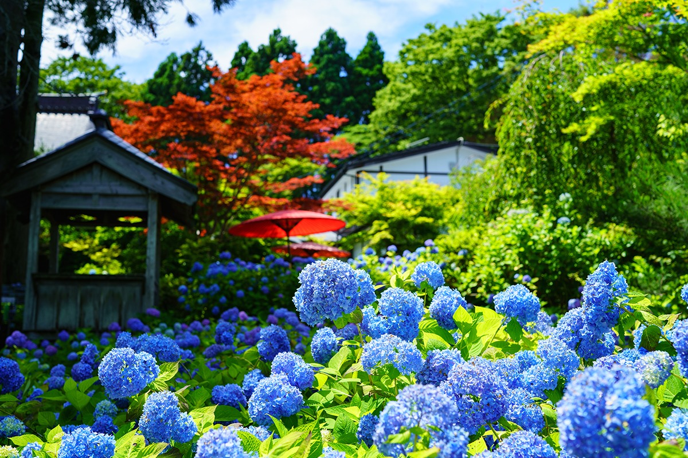
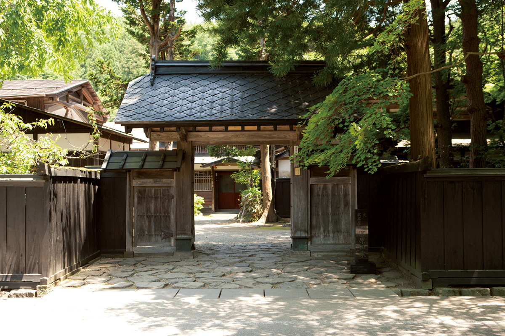
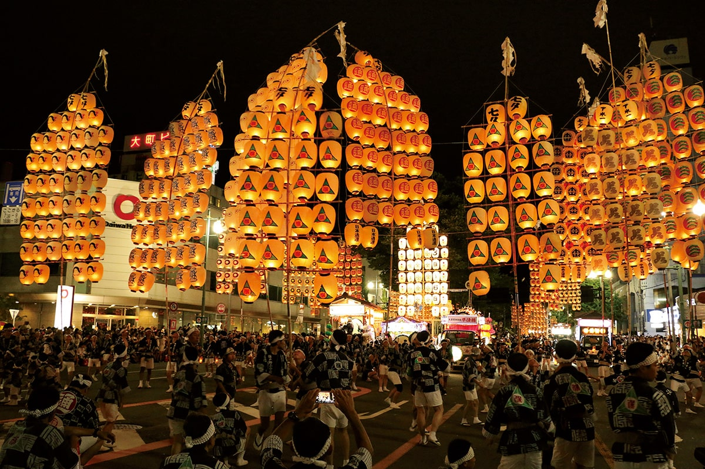
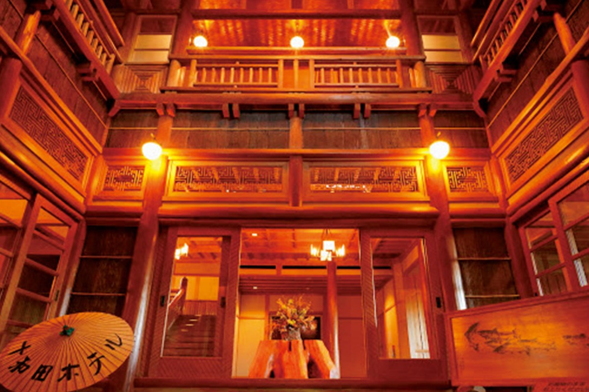
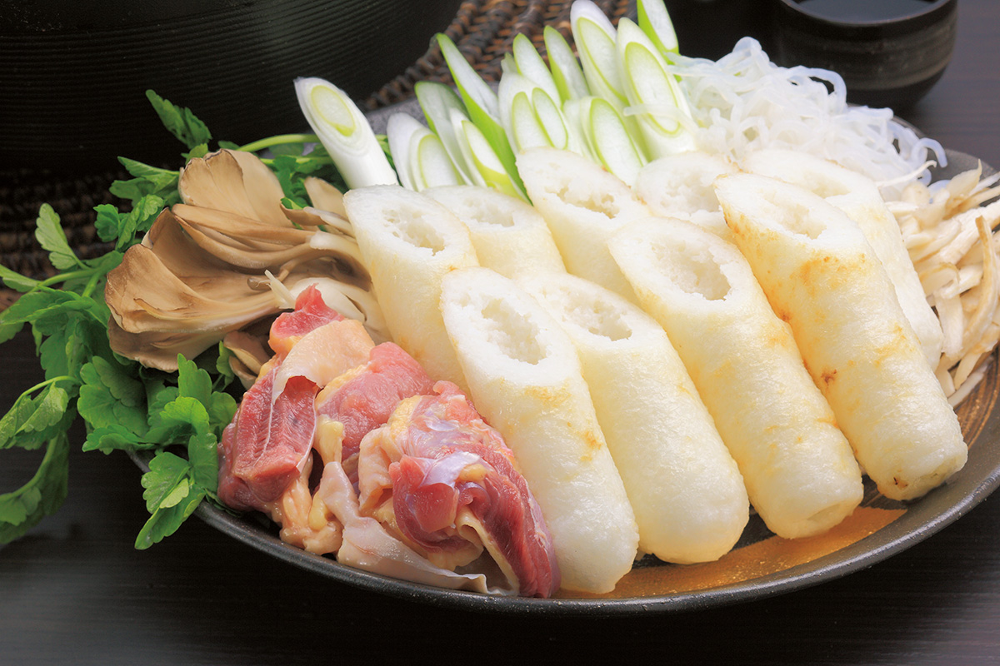
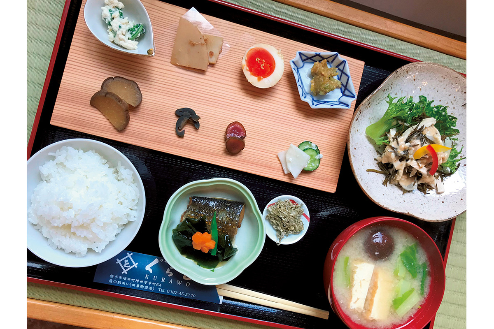
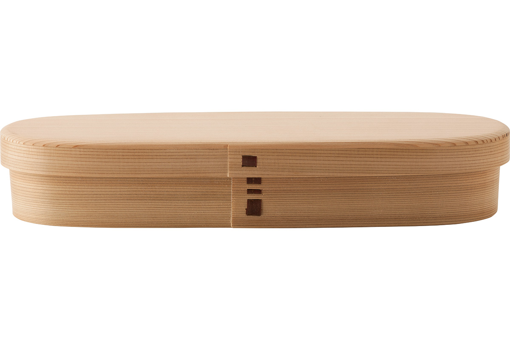
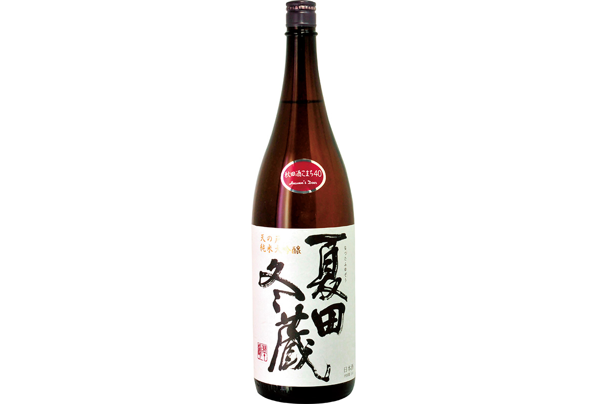
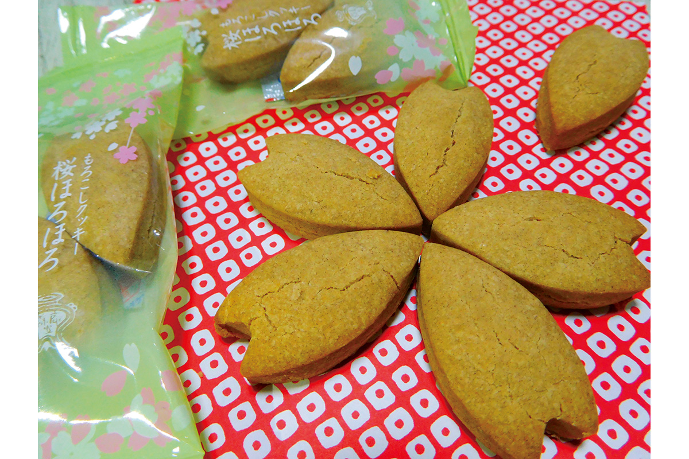
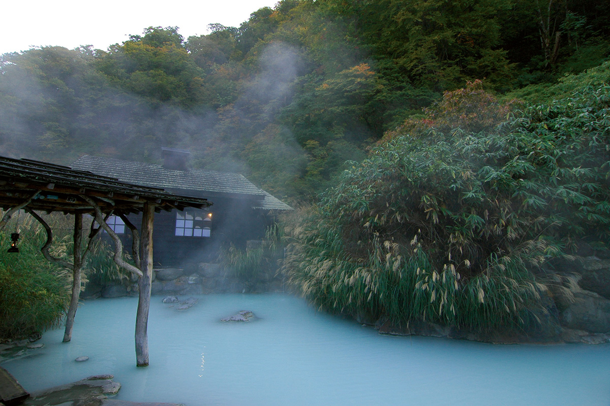

Префектура Акита
Акита: рис, сакэ и фонари на бамбуковых шестах

Кусты гортензий стоят сплошным синим и сиреневым облаком, за ними видны деревянная беседка, алый зонт и краснеющие клёны.
Здесь собирают один из лучших урожаев риса в стране, поэтому и сакэ варят почти в каждой долине, а летом над улицами поднимают шесты с сотнями горящих фонарей. Рассказываем, за чем ехать в Акиту.
О префектуре
Долина риса и сакэ между морем и хребтами
Акита лежит на северо-западе Тохоку, то есть северо-востока главного острова. С севера её прикрывают горы Сираками, внесённые в список Всемирного наследия за буковые леса, с востока хребет Оу. На западе префектура выходит к Японскому морю, и там стоят рыбацкие порты, известные ловом рыбы хатахата.
Название Акита упоминается уже в древних хрониках, где его записывали разными иероглифами. В первой половине XVI века с севера сюда пришёл самурайский род Андо и присвоил себе имя Акита, но с приходом сёгуната Токугава его перевели в другую провинцию, и до самой эпохи Мэйдзи краем управлял род Сатакэ, один из крупных самурайских родов севера.
Префектура знаменита рисом акита-комати и своим способом варки сакэ: здесь работает особая группа мастеров-тоудзи из области Ямаути. В последние годы появилось объединение молодых хозяев заводов «NEXT5», которые пробуют новые подходы к местному сакэ.
Что посмотреть
Улица, где жили самураи
Квартал самурайских усадеб в Какунодатэ
Городок Какунодатэ выстроил самурайский род Асина в 1620 году как крепость у подножия гор, и здесь сохранилась улица самурайских усадеб. Из-за старых домов и чёрных заборов город зовут «маленьким Киото на севере», а многие постройки приспособили под лавки и мастерские.

- Справки
- туристический центр у станции Какунодатэ
- Телефон
- +81 187-54-2700
Что ещё посмотреть
- Озеро Тадзава, самое глубокое озеро страны
- Гортензии в храме Унсё-дзи, летний сад, который зовут голубым
- Полуостров Ога, берег с рыбацкими посёлками
Праздники
Шесты с фонарями над головой
Канто-мацури
Это старый праздник: его первые формы сложились ещё в середине XVIII века. Фонари подвешивают на длинные бамбуковые шесты канто, и силачи поднимают их на ладонях, на лбу, на плече и на бедре, а шест качается у них над головой. Считается, что огни прогоняют болезни и злые силы.

- Период
- с 3 по 6 августа
- Место
- площадь Агора у западного выхода станции Акита
Другие праздники
- Праздник сакуры в Какунодатэ, сезон цветения на самурайской улице
- Омагари-но ханаби, общенациональный конкурс фейерверков
- Канто на других улицах, летние шествия с фонарями по всей префектуре
Музеи и архитектура
Деревянный дом на берегу озера
Отель Товада
Отель открылся в 1939 году и стоит у озера Товада. Его построили из местного кедра акита-суги, который берут из числа трёх самых известных корабельных лесов Японии, и в интерьере сохранили огромные брёвна: здание деревянное, в три этажа, и считается историческим.

- Адрес
- Yakeyama, Kosaka, Kazuno, Akita
- Телефон
- +81 176-75-1122
- Сайт
- towada-hotel.com
Что ещё посмотреть
- Художественный музей префектуры, собрание живописи, в том числе местных мастеров
- Музей манги в Масуде, первый в стране музей, посвящённый комиксам
- Коракан, старый деревянный театр в Косака
Местная кухня
Колотушки из риса в курином бульоне
Киританпо-набэ
Киританпо это рис, который варят, разминают и наматывают на кедровую палочку, а потом поджаривают на огне. Колотушки режут и опускают в бульон на куриных костях из местной породы хинай-дори, приправленный соевым соусом. Получается сытное зимнее блюдо, которое готовят прямо за столом.

Что ещё попробовать
- Хатахата-дзуси, суши из мелкой рыбы хатахата с икрой
- Инанива-удон, тонкая лапша, которую здесь тянут руками
- Ибуригакко, копчёная редька на зиму
Где поесть
Столовая при старом складе сакэ
«Кураво»
Это домашняя столовая, которую открыла местная семья, известная в городе Йокотэ производством закваски кодзи с 1918 года. Здесь готовят блюда из местных сезонных продуктов и кодзи, то есть закваски из риса, на которой держатся соевый соус, мисо и сакэ. Обязательно советуют попробовать мисо-суп на местной пасте кисукэ-мисо и соленья гакко.

- Адрес
- 64 Nakamachi, Masuda-machi, Yokote, Akita
- Телефон
- +81 182-45-3710
- Часы
- с 10:00 до 17:00, обед с 11:30 до 15:00
- Выходные
- среда и четверг
- Сайт
- kurawo.net
Ремёсла
Пенал из согнутого кедра
Магэваппа
Магэваппа это посуда из тонкой кедровой пластины: её распаривают, сгибают и скрепляют лентой из коры вишни, и в такой коробке рис долго остаётся свежим. Техника считается традиционным промыслом, и в магазине при мастерской можно попробовать сделать коробку самому.

- Справки
- магазин мастерской, отдел ваппа
- Телефон
- +81 186-59-7123
- Сайт
- magewappa.com
Что привезти
Сакэ и печенье из старинных рецептов
Дайгиндзё «Нацута Фуюдзо»
Завод покупает рис только у хозяйств в пределах пяти километров от своих стен, и это редкое условие даже для сакэ-регионов. Дайгиндзё выдерживают из риса, от которого осталась примерно половина зерна, поэтому вкус получается мягким и полным; бутылка 720 миллилитров стоит 2200 иен.

- Телефон
- +81 182-24-1030
- Сайт
- amanoto.co.jp/
Печенье «Морокоши»
Морокоши это старинное акитское лакомство из теста и бобовой муки. В местной мастерской на его основе печётся легкое печенье из муки красной фасоли; набор из шести упаковок по два печенья стоит 350 иен.

- Справки
- мастерская Тодоан, лавка в квартале самурайских усадеб
- Телефон
- +81 187-52-8170
- Сайт
- morokosian.jp/
Где остановиться
Онсэн у леса, которому больше трёхсот лет
Онсэн Цуру-но-ю
В ущелье Нюто, где на склонах стоит восемь гостиниц, эта считается самой старой. Известно, что в 1638 году сюда приезжал Сатакэ Ёситака (1609–1672), второй правитель княжества Акита из рода Сатакэ, владевшего этой землёй в эпоху Эдо. Гостиница стоит в государственном лесу, поэтому вокруг только деревья и пар от воды.

- Адрес
- 50 Tazawa-sendatsuzawa, Semboku, Akita
- Телефон
- +81 187-46-2139
- Комнат
- 35
- Цена
- от 9830 до 19 950 иен за ночь с двумя приёмами пищи, налоги и сбор включены
- Сайт
- tsurunoyu.com/
Местный диалект
Как здесь говорят «очень вкусно»
- суттагэ умэнаочень вкусно
- мадзу, окканэа ханасикко даэто действительно страшная история
- намбо ханаситэмо ядзя нэасколько ни говори, всё бесполезно
- вася ва кунэбаесли не пойду домой
Рекорды
В чём Акита первая
- №1 правильные ответы школьников на общенациональном тесте: первое место
- №1 продолжительность сна: первое место в стране
- №1 в мире самый большой барабан тайко: огромный барабан стоит в музее барабанов
Вопросы и ответы
Что ещё спрашивают об Аките
Какому делу посвящён первый в стране музей в городе Йокотэ?
Комиксам. Музей манги в Масуде, первый в стране музей с такой темой, рассказывает об истории комиксов и хранит оригинальные рисунки известных художников из Японии и других стран.
Как называется самое глубокое озеро Японии?
Озеро Тадзава глубиной 432,4 метра. Оно лежит в центре восточной части префектуры, имеет форму круга около шести километров в поперечнике и славится не только глубиной, но и прозрачностью; на его кобальтовом берегу стоит золотая статуя девушки Тацуко.
Справочник
Акита в цифрах
Общие сведения
| Административный центр | Акита |
| Муниципалитеты | 13 городов, 9 посёлков, 3 деревни |
| Площадь | 11 638 кв. км |
| Население | 980 тысяч человек |
| Плотность населения | 84,3 человека на кв. км |
| Туристов в год | 3,48 млн |
| Дерево префектуры | кедр акита-суги |
| Цветок префектуры | побеги белокопытника фуки-но то |
| Птица префектуры | японский тетерев ямадори |
Климат
| Средняя температура | +12,3 |
| Максимум | +29,2 |
| Минимум | минус 4,0 |
| Осадки | 2017 мм |
| Ясных дней | 9 |
| Дождливых дней | 168 |
| Снежных дней | 101 |
Для путешественника
| Онсэнов | 120 |
| Гостиниц и рёканов | 565 |
| Музеев искусств | 8 |
| Музеев | 90 |
| Митиноэки, придорожных станций | 33 |
| Национальное сокровище | зеркало с гравированным изображением тысячерукой Каннон из святилища Мидзу-дзиндзя |
| Важных культурных ценностей | 38, из них 1 национальное сокровище |
| Исторических мест | 13 |
| Живописных мест | 5 |
| Природных памятников | 27 |
| Всемирное наследие | горы Сираками |
| Национальные парки | Товада-Хатимантай, Курико, Ога, Тёкай, всего 4 |
Природные памятники
- Собака акита-ину, порода, которую здесь вывели
- Камни тамагава-онсэн, редкая порода с месторождения у источника
- Кисаката, лагуна с островами у моря
- Разлом Тия, место, где видно смещение пластов
- Плакучие вишни Какунодатэ, старые деревья на улице самурайских усадеб